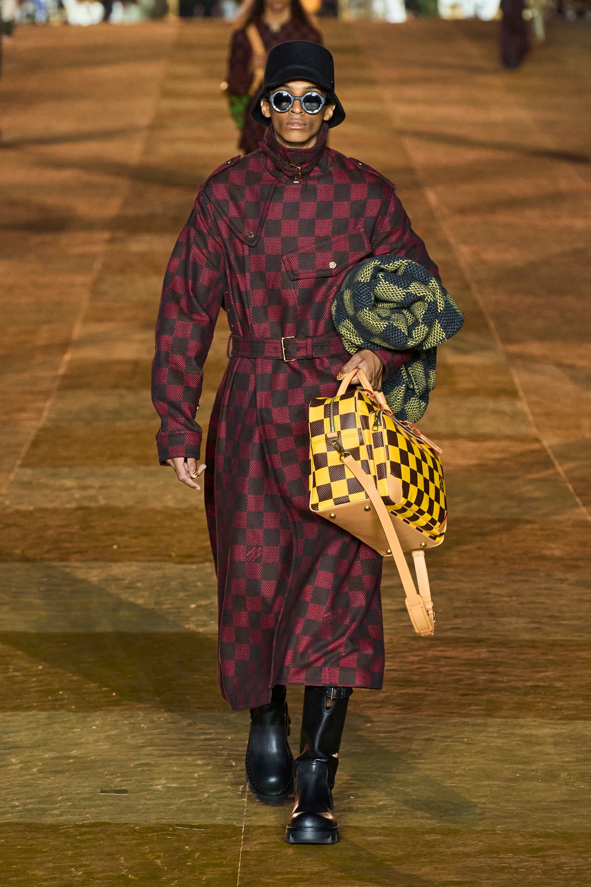
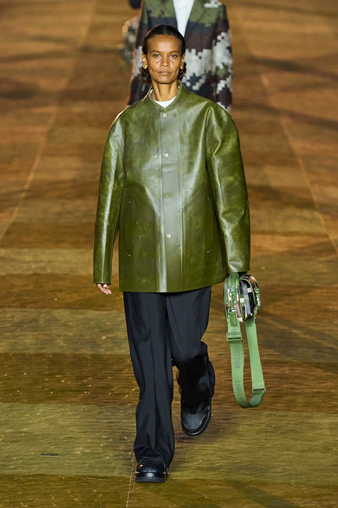

Where to begin with Pharrell’s debut menswear show for Louis Vuitton, the flagship luxury house of the world’s most powerful fashion conglomerate? I could start by telling you all about the clothes, but this show wasn’t really about the clothes. It was about power. This was a ceremonial exchange of it between the world’s richest family and one of the world’s most prolific artists; an exchange of dynastic, old-money-Europe and modern-day Black cultural capital; a meeting of hip-hop legends in monogrammed jackets and Parisian business tycoons in their navy suits. Pharrell is the latest addition to a stable of creative directors who define the look of the world’s most aspirational businesses. He has become the first musician-turned-designer at LVMH, bringing with him the kind of unparalleled cultural power that persuades Beyoncé to take a break from her world tour sit front row, Jay-Z to perform after the show, a heavily-pregnant Rihanna and A$AP Rocky to show up halfway through and perch alongside editors, and just about every other A-list celebrity to fly in and and fly the flag for fashion’s newly officiated marriage to the world of entertainment.
In one night, the typical pyramid of luxury houses — one-of-a-kind couture at the top and mass-produced beauty at the bottom — has well and truly been reversed, even if it has been turning for a while. Now, mass-appeal celebrity sits at the top of the triangle of desire, and one-of-a-kind clothes for the 0.001 per cent at the bottom. Gone are the days when household-name celebrities simply lent their name to mass-produced fashion lines. Last night’s Louis Vuitton show was probably the most expensive production LVMH has ever staged, which is really saying something.
It started with a simple boat tour. Guests arrived at the show via the Seine in Bateaux Mouches as the sunset coloured the sky with apricot hues. Upon entering Paris’ oldest bridge, Pont Neuf, you stepped onto a road entirely paved in dusky gold for the occasion. Paris never looks this beautiful — in fact, earlier in the day, it was pouring down with rain. Usually, this bridge is a road, rammed with traffic leading up to the Louis Vuitton headquarters. Last evening, however, it was transformed into Disneyland, complete with a giant Yayoi Kusama looming over in the background. An orchestra played instrumental versions of “La Mer” and “La Vie En Rose” as silver trays of Coca-Cola and Veuve Cliquot were served by liveried waiters. And just as there would later be berets in the collection, the kind that every American associates with Paris — there was also the bombastic ostentation that every Parisian associated with Americans, on display in full throttle. The symbolism of the golden bridge was not lost, even if it was a little heavy-handed.
In fashion’s notoriously closed circles, there has been skepticism about what this appointment means for traditional designers. However, the truth is that it doesn’t change much because Pharrell is no ordinary pop star; he is a cultural icon, sui generis, who has worked with almost every major music artist and produced songs that you can sing without checking the lyrics. He’s also a style icon, helping shape the look of hip-hop over the last two decades, and his appointment heralds a new era in which Black cultural capital is being absorbed into traditionally elitist European spaces. Since the beginning of his career, Pharrell has dabbled in fashion. In 2003, he founded Billionaire Boys Club with Nigo, his creative kin and now fellow LVMH designer in his role at Kenzo. That same year, Pharrell met Marc Jacobs, then the creative director of LV, who invited him to collaborate on a pair of sunglasses, which became a must-have for rappers — funnily enough, a version of them can still be found in the house’s stores around the world. Over the years, he also became a poster boy for gender-fluidity long before it was marketing jargon — just think of how good he looked in Chanel.
Last night, however, saw the official christening of Pharrell as a blue-chip fashion designer, at least in the eyes of the fashion industry. No longer a client, but a creator. His collection opened with his take on the Louis Vuitton ‘Damier’ canvas, which he reconfigured as a pixelated camo motif — he calls it ‘Damoflage’ — and used across a plethora of menswear staples, in myriad textures: printed leathers and satins, intarsia mink, blue denim, knitted beanies, woven jacquards, bouclé tweeds, and of course, bright, primary-coloured bags piled on generously. Sometimes, it looked couture-like in its textured appliqués and, other times, like gamer-coded takes on a print beloved by men young and old. “The fact that it has the chessboard setup, we could use the grid as a platform to play with different artistic techniques,” Pharrell said. “I wanted to make a print that makes people say, “Okay, that’s P. And that’s Damier.”
This was not Quiet Luxury, but interestingly the collection had a focused refinement and singularity to it; Stealth Wealth for a different kind of billionaire, perhaps. Sure, there were a million ideas, but that’s just all fashion now, and even the most classically trained designers churn out collections that are far-reaching and eclectic. What stood out were nods to some of the expressive style of hip-hop, which officially turns 50 years old this year. There was a prideful joy in the opulence of the monogrammed furs, gold-toned luggage, brightly coloured Speedy bags (which Pharrell pointed out were originally a men’s canvas bag before the house made a smaller version for Audrey Hepburn in 1965) and debonair Jazz Age tailoring, dotted with ornate brooches. Much of it clearly paid homage to the legends who paved the way for Pharrell, like Dapper Dan of Harlem, who famously turned LV luggage into everything from clothes to car seats, as well as the late Virgil Abloh, Pharrell’s predecessor at Vuitton. “He left a lot of hits with the house,” Pharrell explained. “As far as I’m concerned, I’m collaborating with his spirit.”
Any skepticism was surely cast aside when the Voices of Fire choir, from Pharrell’s hometown Virginia, took to the catwalk and began singing, repeating the word ‘Joy’ louder and louder until the Pont Neuf bridge was close to vibrating. From there, it only got bigger and, indeed, more joyful. At one point, a golf buggy with the word “Liberty” emblazoned across it came out, piled high with Vuitton trunks in more of that soon-to-be-everywhere Damoflage. A handful of women — such as Liya Kebede and Anna Ewers — were an unprecedented sight on a Louis Vuitton catwalk, testament to Pharrell’s ability to disrupt the powers-that-be at LVMH who don’t usually like to blur the lines between a house’s menswear and womenswear ambassadors. Also case in point: Pharrell’s first campaign stars: Rihanna and her unborn baby. Nicolas Ghesquiere, his womenswear counterpart, was there in full support, perhaps a sign that times are changing.
“This is a win for the culture,” Jay-Z said as he welcomed Pharrell onstage to perform “Frontin’” with him after the show — surely another first for an LVMH creative director. Which culture, however, is the more real question. With this show, Pharrell has blurred the lines between so many previously adjacent yet distinct fields: fashion, entertainment, design, luxury, celebrity. In doing so he has lit the fuse of a bomb that will change the course of fashion’s history, the aftershock of which we’ll see in years to come. Some will resist that, but the shift is inevitable — Darwinian even. In any case, you can rest assured: we’ll have plenty to wear from Louis Vuitton whatever happens.